Loading-screen artwork audit All 62 screens: AI — user flagged. This is a user-requested classification, not verified authorship. It includes the legacy artwork in screen 19. Quality decisions below remain separate.
8 replace · 31 review · 23 retain provisionally
All 62 installed numbered screens reviewed. Click an image for its native-width artwork preview. Decisions concern visible quality; AI authorship and historical accuracy are not authenticated.
Scope, installation issue, and recovery evidence Visual audit of installed loading artwork — 22 September 2026
All 62 numbered screens currently in data/loading_screen were visually reviewed in labelled 768-pixel-wide previews. Sixteen selected screens were also inspected individually at the native 1024-pixel artwork width. This is a visual-quality audit, not proof of AI authorship or authentication of historical subjects. No game launch or historical source matching was performed.
Findings: 8 replace; 31 review; 23 retain provisionally. Retain means no comparable major defect was identified at the inspected scale, not a historical or licensing approval. Review distinguishes unresolved details from definite replacement recommendations.
The source set data/loading_screen/load_steamsteel contains 61 numbered images, all byte-identical to their installed counterparts. The load_althis set has the same 61 images. Neither contains screen 19. The installed screen 19 matches load_europe/Loading_screen_19.tga and load_greatgame/Loading_screen_19.tga (also repeated under other slot numbers). Steam & Steel.bat line 9 copies the selected loading folder over the runtime folder without clearing unmatched files. This permits stale screens to survive. Actual engine selection frequency was not tested.
Inventory covers 557 TGA files across the runtime folder and eight source sets: 284 byte-distinct assets, including loading bar/logo. The 220 distinct assets outside the numbered runtime set were inventoried and previewed to files, but were NOT given a complete visual audit. Findings below cover all artwork installed for the supplied Steam & Steel launcher, including its stale slot.
The December 10, 2025 commit 269c210a (Loading Screen Overhaul) changed 372 loading-art files. Its message contains no authorship explanation. Earlier versions survive in its parent; four example slots were extracted into this report folder without modifying game files. Their subjects differ, so restoration requires selection rather than assuming identical slot subjects. Visual anomalies are consistent with poorly controlled generated illustration, but file appearance and the commit title do not establish the generating tool or authorship.
Priority: replace screens 5, 7, 8, 13, 21, 25, 37 and 52. Strongest mechanical/anatomical examples are 5, 8, 25 and 52. Preserve existing artwork; prefer independently sourced period artwork or the recoverable prior collection after attribution and suitability checks. Review vehicle machinery, hands and mounted overlaps next. Any future installation must update source and runtime consistently and explicitly handle stale slots.
No installed art, launcher or gameplay file was changed. PNG/JPEG files here are audit previews only. inventory.json preserves paths and SHA-256 hashes; findings.json records per-screen decisions.
View four recovered earlier screens Filter: All Replace Review Retain provisionally
Screen 1 — Review AI — user flagged · Authorship unverified
Bridge construction: several workers merge with scaffold members; joints and tool contacts need closer reconstruction.
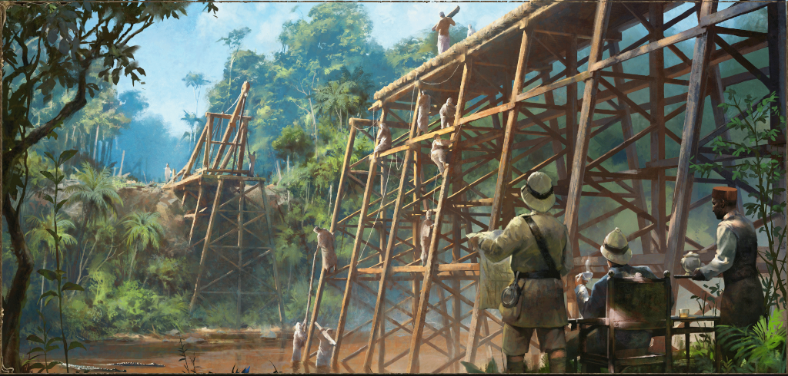
data/loading_screen/Loading_screen_1.tga Identical file locations data/loading_screen/load_althis/Loading_screen_1.tga Screen 2 — Retain provisionally AI — user flagged · Authorship unverified
Harbour delegation: coherent principal figures and composition; small troop details are soft.
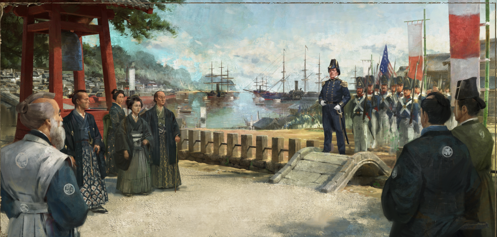
data/loading_screen/Loading_screen_2.tga Identical file locations data/loading_screen/load_althis/Loading_screen_2.tga Screen 3 — Review AI — user flagged · Authorship unverified
Polar balloon: suspension ropes, basket attachments and clustered figures are visually confused.
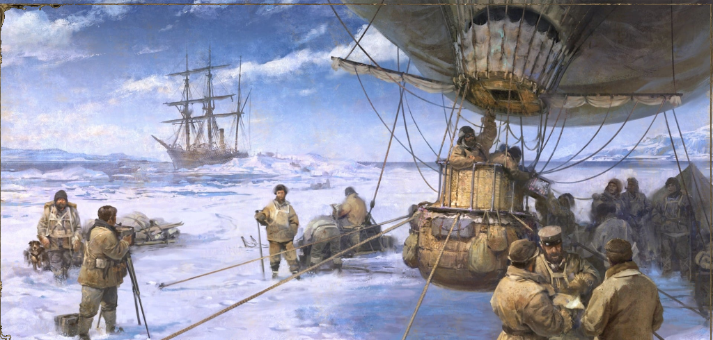
data/loading_screen/Loading_screen_3.tga Identical file locations data/loading_screen/load_althis/Loading_screen_3.tga Screen 4 — Retain provisionally AI — user flagged · Authorship unverified
Warship: clear silhouette and atmosphere; exact ship identity and rigging remain unverified.
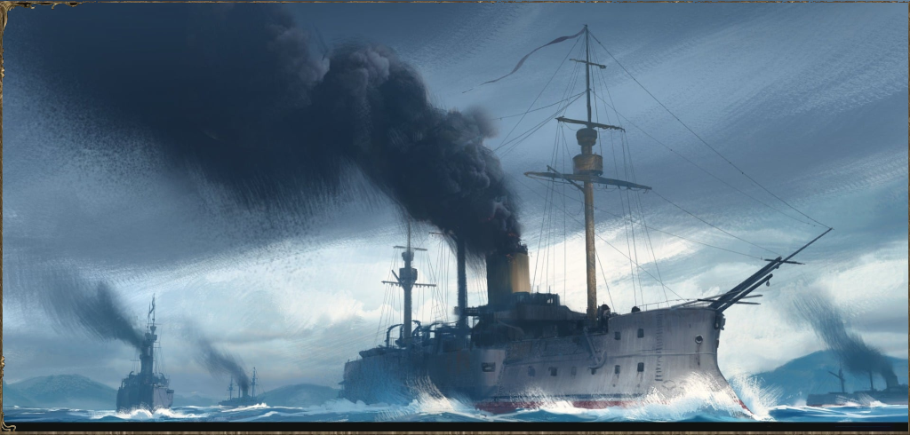
data/loading_screen/Loading_screen_4.tga Identical file locations data/loading_screen/load_althis/Loading_screen_4.tga Screen 5 — Replace AI — user flagged · Authorship unverified
Firing line: repeated overlapping arms and stocks do not resolve into clean individual rifle grips; right-hand rank dissolves into isolated weapon fragments.
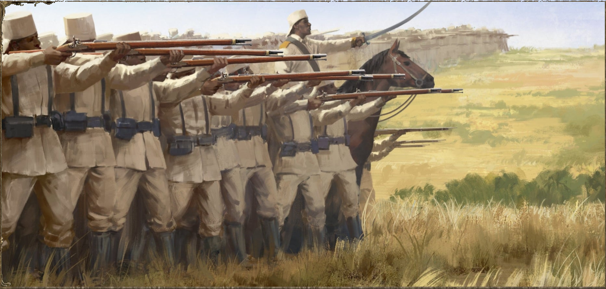
data/loading_screen/Loading_screen_5.tga Identical file locations data/loading_screen/load_althis/Loading_screen_5.tga Screen 6 — Review AI — user flagged · Authorship unverified
Royal montage: intentionally symbolic composition, but costume and person identification require source documentation.
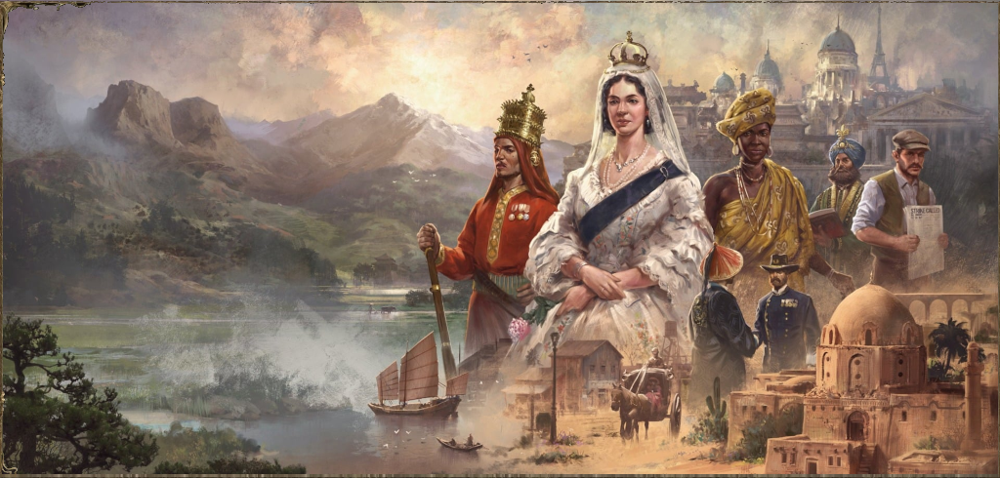
data/loading_screen/Loading_screen_6.tga Identical file locations data/loading_screen/load_althis/Loading_screen_6.tga Screen 7 — Replace AI — user flagged · Authorship unverified
Warriors: the kneeling archer has multiple competing bow/arrow lines through his face and grip; the main rifle action and hand contact are poorly resolved.
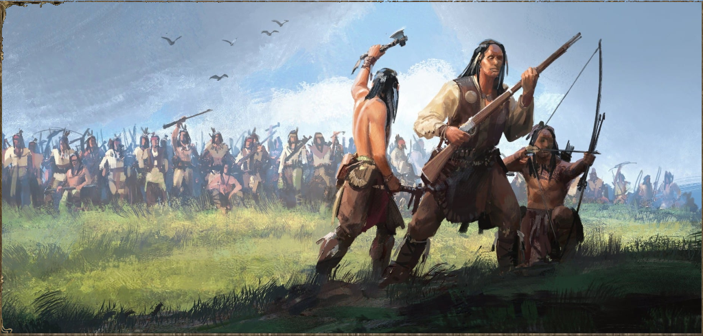
data/loading_screen/Loading_screen_7.tga Identical file locations data/loading_screen/load_althis/Loading_screen_7.tga Screen 8 — Replace AI — user flagged · Authorship unverified
Artillery: repeated giant tubes, adjacent rounded objects and carriage parts do not resolve into intelligible loading or recoil mechanisms; excessive flame columns obscure rather than explain the equipment.
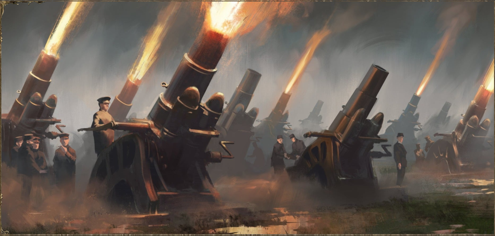
data/loading_screen/Loading_screen_8.tga Identical file locations data/loading_screen/load_althis/Loading_screen_8.tga Screen 9 — Review AI — user flagged · Authorship unverified
Street fight: central contact hands and background grappling figures are ambiguous.
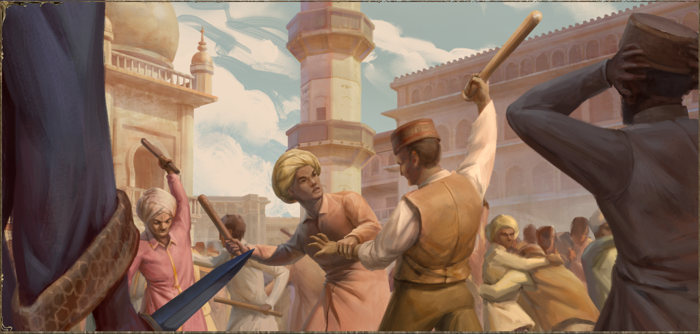
data/loading_screen/Loading_screen_9.tga Identical file locations data/loading_screen/load_althis/Loading_screen_9.tga Screen 10 — Retain provisionally AI — user flagged · Authorship unverified
Dockyard: strong overall spatial composition; small workers and hoist details need source checking.
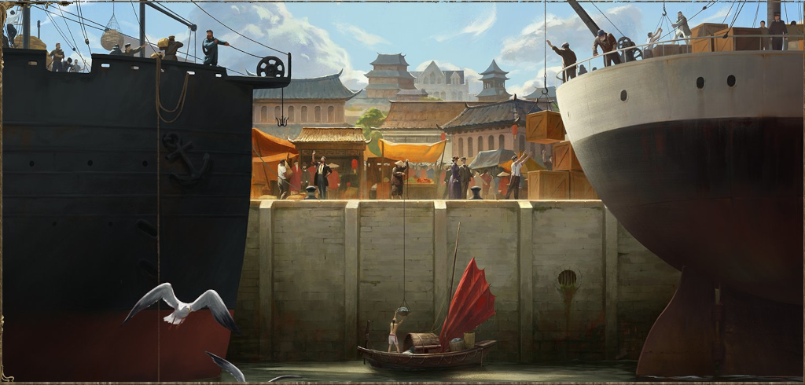
data/loading_screen/Loading_screen_10.tga Identical file locations data/loading_screen/load_althis/Loading_screen_10.tga Screen 11 — Review AI — user flagged · Authorship unverified
Earthwork assault: right foreground rifle grip and the background stock/sling cluster are confused; several combat interactions feel posed rather than connected.
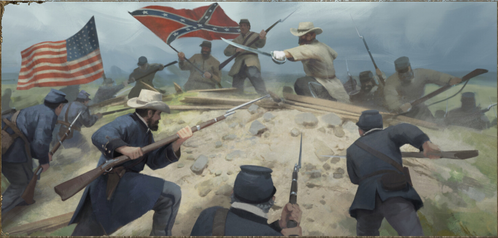
data/loading_screen/Loading_screen_11.tga Identical file locations data/loading_screen/load_althis/Loading_screen_11.tga Screen 12 — Review AI — user flagged · Authorship unverified
Rooftop fight: footing, roof depth and right-hand rifle struggle are weakly resolved.
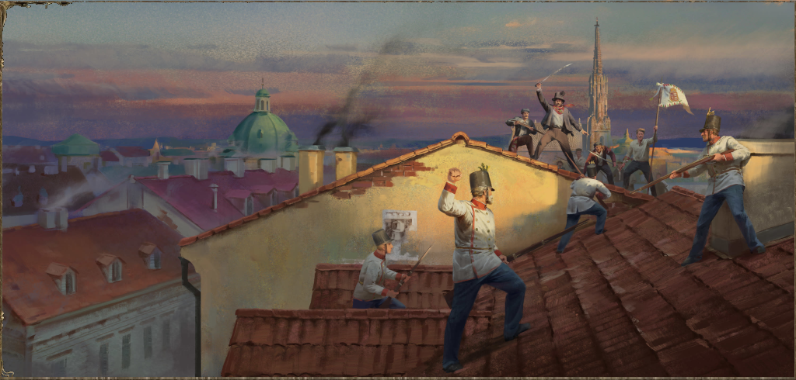
data/loading_screen/Loading_screen_12.tga Identical file locations data/loading_screen/load_althis/Loading_screen_12.tga Screen 13 — Replace AI — user flagged · Authorship unverified
Lamplighter: figure and post float above a city-scale drop without a credible ledge or mounting location; leg support and intended working action are unconvincing.
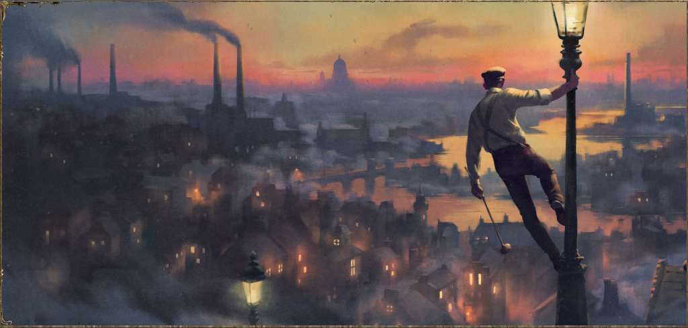
data/loading_screen/Loading_screen_13.tga Identical file locations data/loading_screen/load_althis/Loading_screen_13.tga Screen 14 — Retain provisionally AI — user flagged · Authorship unverified
Interior gathering: main silhouettes and objects remain readable; minor faces are simplified.
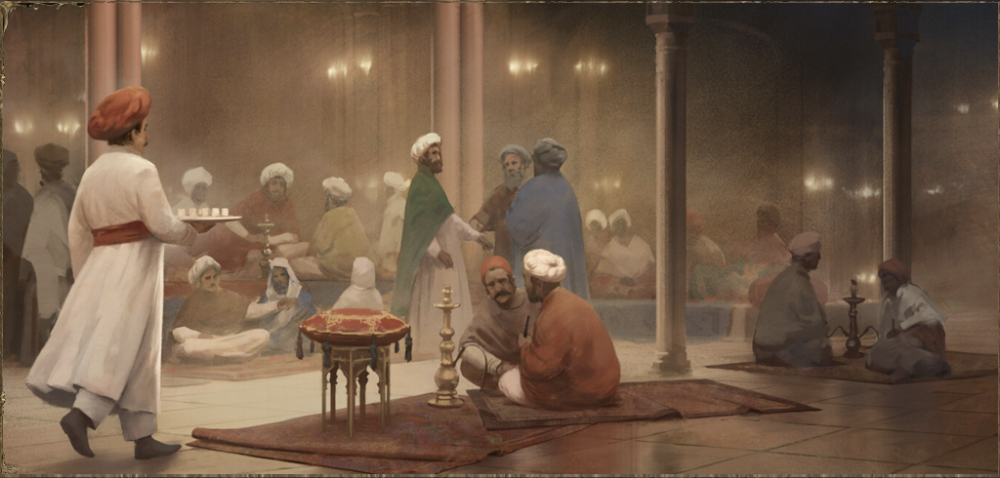
data/loading_screen/Loading_screen_14.tga Identical file locations data/loading_screen/load_althis/Loading_screen_14.tga Screen 15 — Retain provisionally AI — user flagged · Authorship unverified
Mounted prairie group: clear principal horse/rider relationships; distant detail is appropriately subordinate.
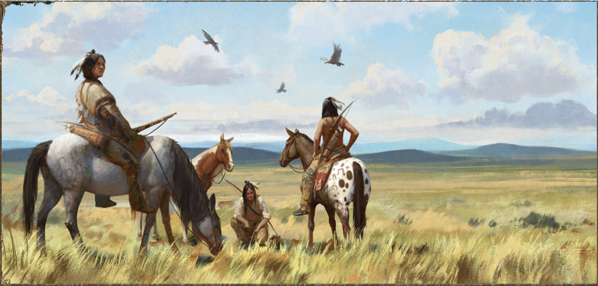
data/loading_screen/Loading_screen_15.tga Identical file locations data/loading_screen/load_althis/Loading_screen_15.tga Screen 16 — Review AI — user flagged · Authorship unverified
Steamship departure: foreground waving hands and ship-side crowd blur into repeated forms.
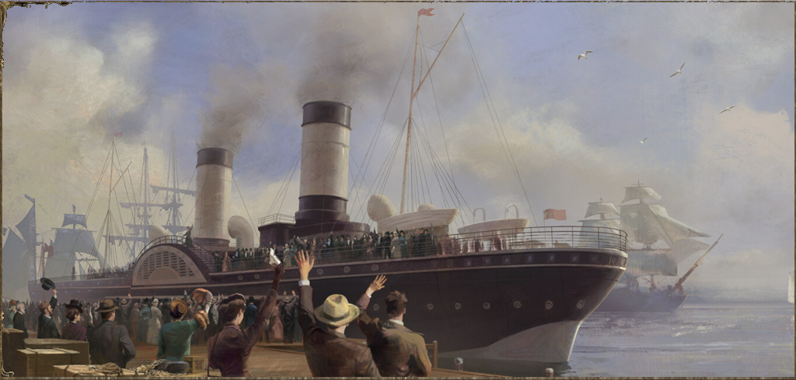
data/loading_screen/Loading_screen_16.tga Identical file locations data/loading_screen/load_althis/Loading_screen_16.tga Screen 17 — Review AI — user flagged · Authorship unverified
Airships: coherent broad silhouettes, but gondola/propulsion details and intended date need a documented reference.
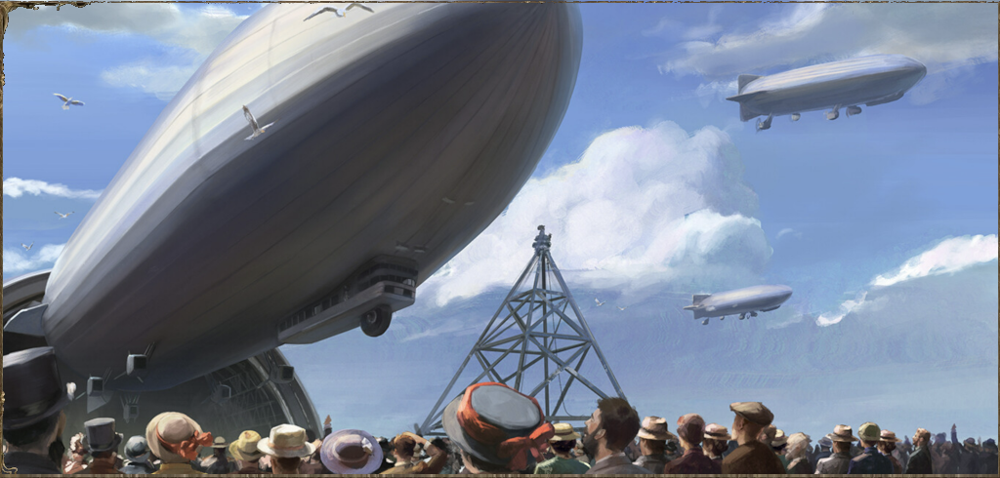
data/loading_screen/Loading_screen_17.tga Identical file locations data/loading_screen/load_althis/Loading_screen_17.tga Screen 18 — Retain provisionally AI — user flagged · Authorship unverified
Coffeehouse: plausible overall grouping; faces and newspaper grips are soft but not a clear structural failure.
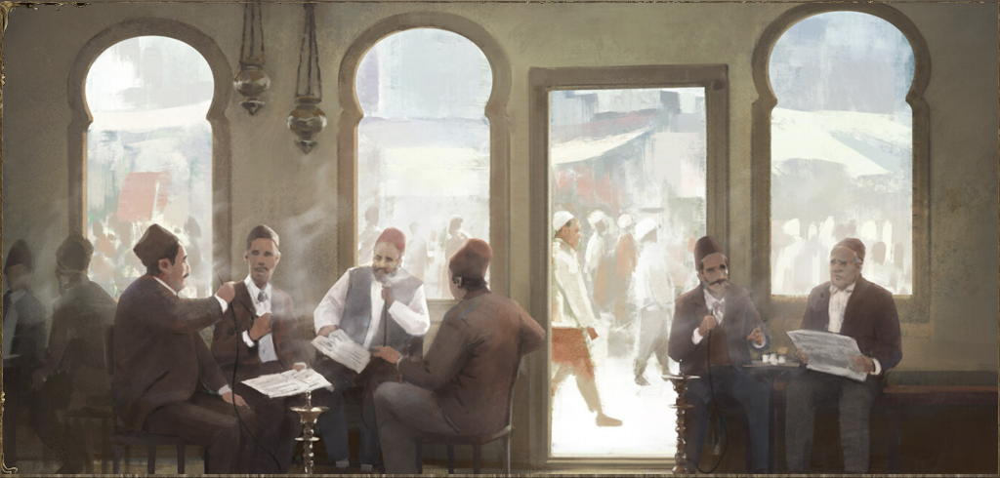
data/loading_screen/Loading_screen_18.tga Identical file locations data/loading_screen/load_althis/Loading_screen_18.tga Screen 19 — Retain provisionally AI — user flagged · Authorship unverified
Legacy military painting: clearly differentiated figures; technical issue is its presence outside the current source set, not an identified visual defect.
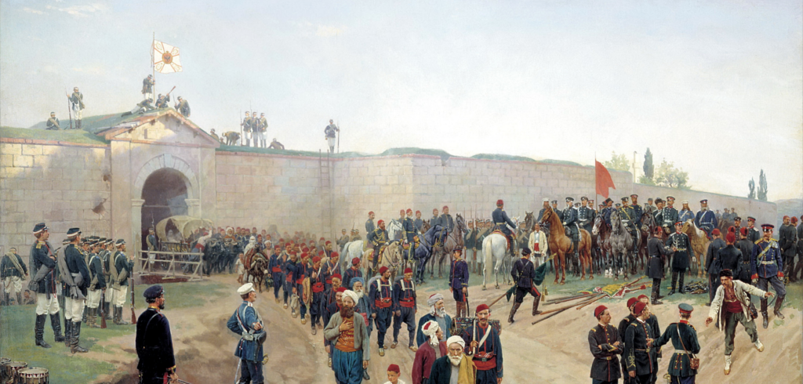
data/loading_screen/Loading_screen_19.tga Identical file locations data/loading_screen/load_europe/Loading_screen_19.tga Screen 20 — Review AI — user flagged · Authorship unverified
Sailing battle: gunfire, stern geometry and rigging need a vessel reference before approval.
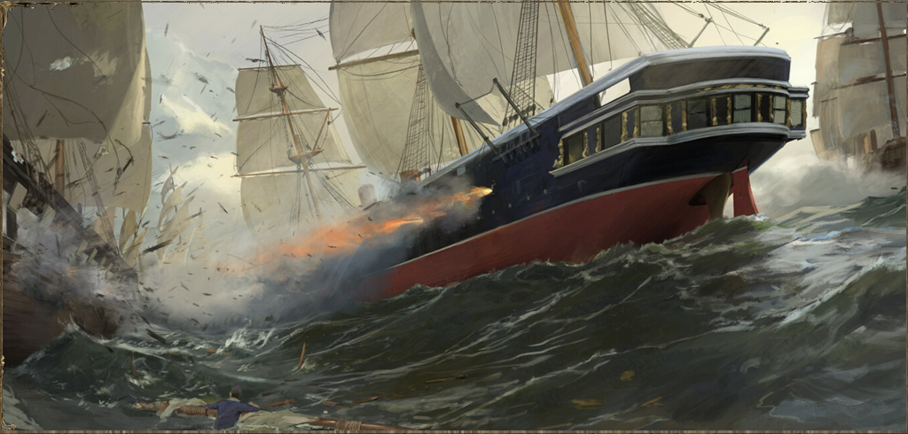
data/loading_screen/Loading_screen_20.tga Identical file locations data/loading_screen/load_althis/Loading_screen_20.tga Screen 21 — Replace AI — user flagged · Authorship unverified
Courtyard melee: central crossing weapons and grips are hard to assign; prone foreground figure and the person restraining him merge into an unclear body arrangement.
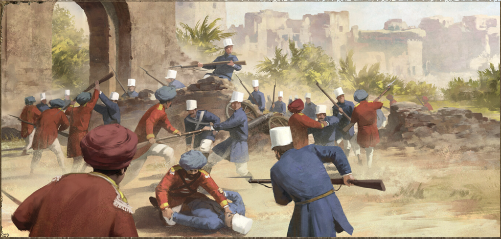
data/loading_screen/Loading_screen_21.tga Identical file locations data/loading_screen/load_althis/Loading_screen_21.tga Screen 22 — Retain provisionally AI — user flagged · Authorship unverified
Night gathering: readable central group and lighting; exact depicted event is undocumented.
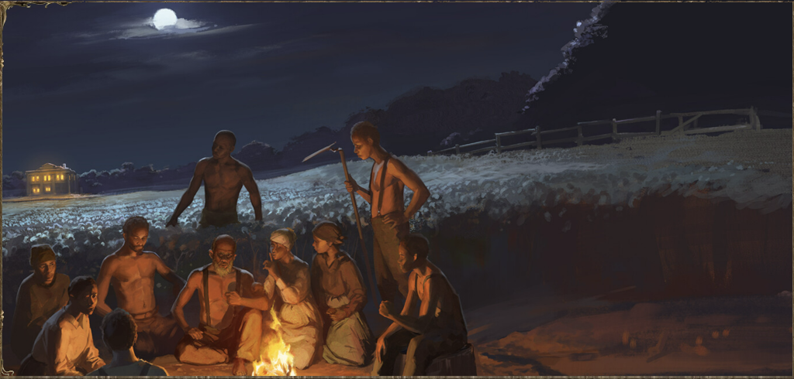
data/loading_screen/Loading_screen_22.tga Identical file locations data/loading_screen/load_althis/Loading_screen_22.tga Screen 23 — Retain provisionally AI — user flagged · Authorship unverified
Quiet interior: principal poses are readable; reclining hand and small props remain soft.
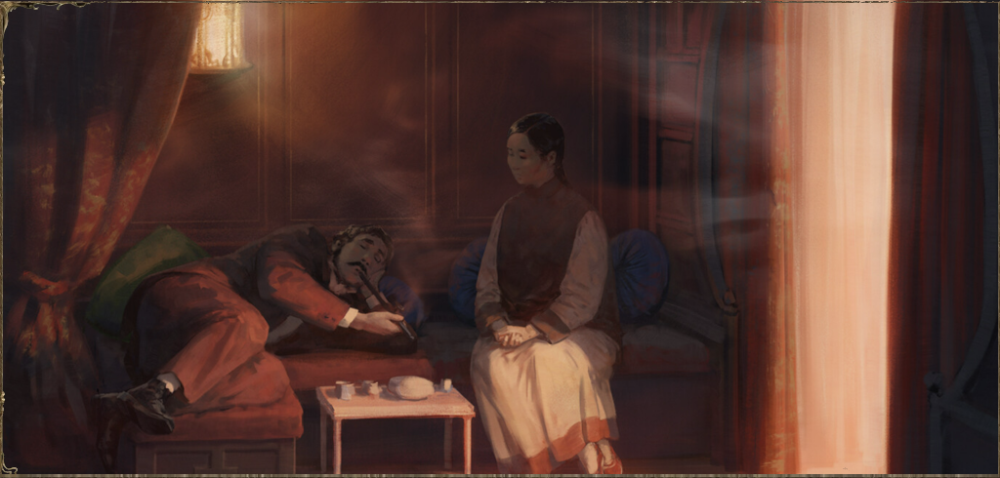
data/loading_screen/Loading_screen_23.tga Identical file locations data/loading_screen/load_althis/Loading_screen_23.tga Screen 24 — Retain provisionally AI — user flagged · Authorship unverified
City street: coherent broad perspective; distant pedestrians are painterly rather than individually resolved.
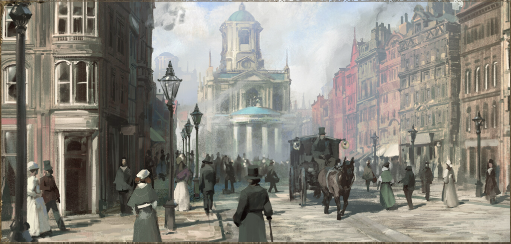
data/loading_screen/Loading_screen_24.tga Identical file locations data/loading_screen/load_althis/Loading_screen_24.tga Screen 25 — Replace AI — user flagged · Authorship unverified
Factory injury: injured worker and helpers form a tangled central cluster; hands, wrist/forearm contacts and the treatment action cannot be read reliably.
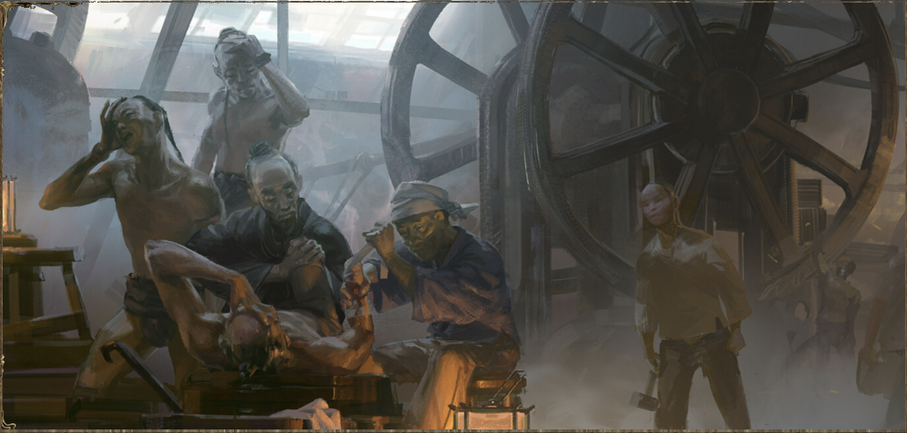
data/loading_screen/Loading_screen_25.tga Identical file locations data/loading_screen/load_althis/Loading_screen_25.tga Screen 26 — Review AI — user flagged · Authorship unverified
Religious gathering: foreground backs read clearly, but raised figure, platform and city are generic without subject provenance.
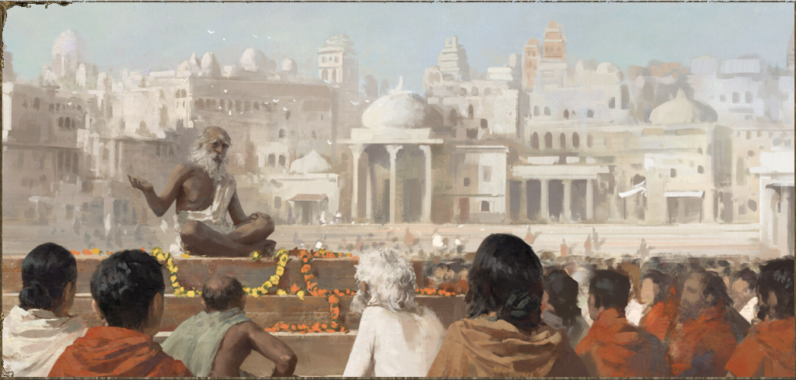
data/loading_screen/Loading_screen_26.tga Identical file locations data/loading_screen/load_althis/Loading_screen_26.tga Screen 27 — Review AI — user flagged · Authorship unverified
Urban unrest: several foreground/background crowd bodies blend into each other; statue and setting need identification.
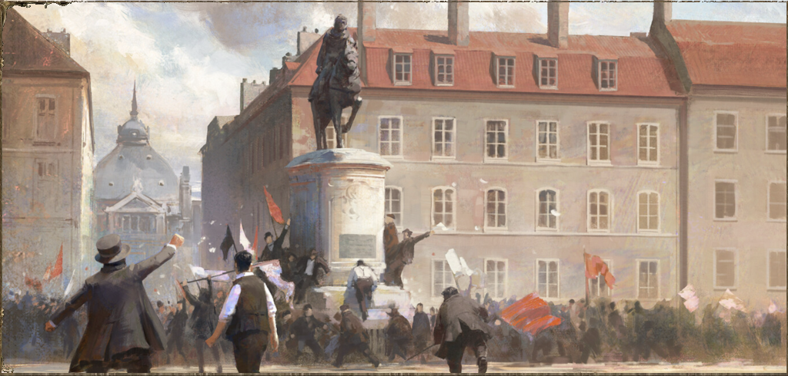
data/loading_screen/Loading_screen_27.tga Identical file locations data/loading_screen/load_althis/Loading_screen_27.tga Screen 28 — Retain provisionally AI — user flagged · Authorship unverified
Prairie railway: simple, readable composition; no obvious primary anatomy failure at review scale.
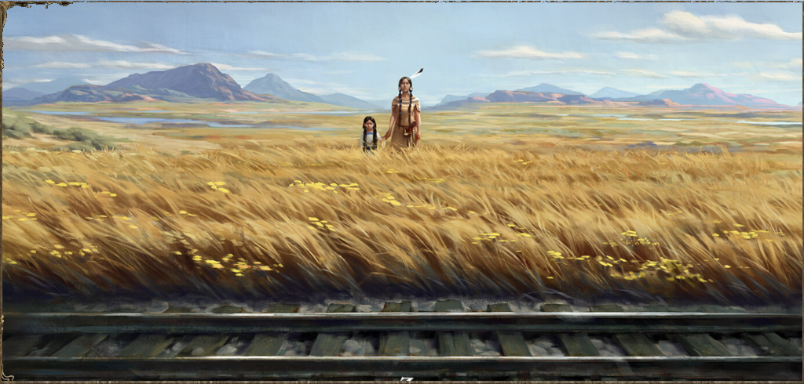
data/loading_screen/Loading_screen_28.tga Identical file locations data/loading_screen/load_althis/Loading_screen_28.tga Screen 29 — Review AI — user flagged · Authorship unverified
Caravan: overlapping camel heads, packs and riders need separate anatomical and tack checks.
data/loading_screen/Loading_screen_29.tga Identical file locations data/loading_screen/load_althis/Loading_screen_29.tga Screen 30 — Review AI — user flagged · Authorship unverified
Door breach: central raised tool, two-handed grip and intended strike are insufficiently clear; other principal figures read better.
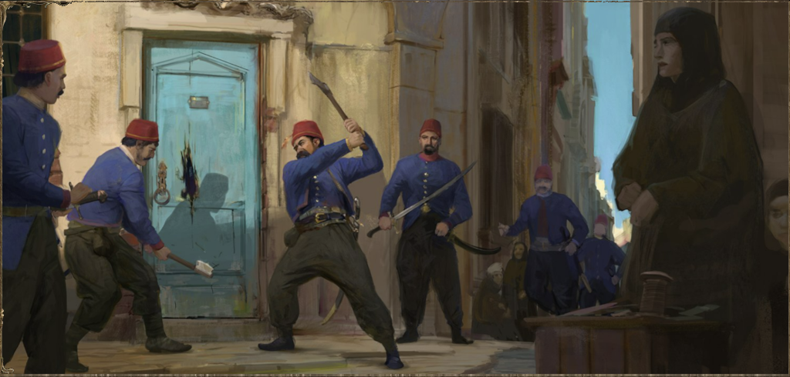
data/loading_screen/Loading_screen_30.tga Identical file locations data/loading_screen/load_althis/Loading_screen_30.tga Screen 31 — Retain provisionally AI — user flagged · Authorship unverified
Monastery: clear major poses and setting; exact place and dress remain unverified.
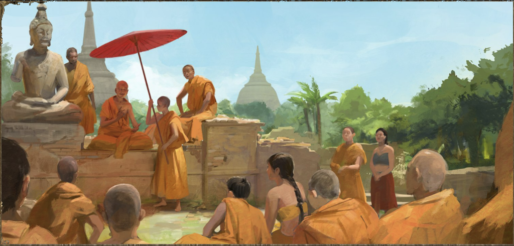
data/loading_screen/Loading_screen_31.tga Identical file locations data/loading_screen/load_althis/Loading_screen_31.tga Screen 32 — Review AI — user flagged · Authorship unverified
Assembly: repeated faces and fezzes become formulaic; lower-left heads are partly swallowed by furniture.
data/loading_screen/Loading_screen_32.tga Identical file locations data/loading_screen/load_althis/Loading_screen_32.tga Screen 33 — Review AI — user flagged · Authorship unverified
Dancer: bent wrist, raised foot and weight distribution need source comparison; do not infer extra limbs merely from the dynamic pose.
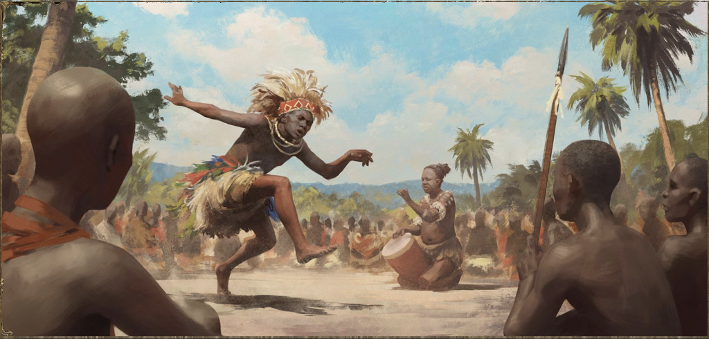
data/loading_screen/Loading_screen_33.tga Identical file locations data/loading_screen/load_althis/Loading_screen_33.tga Screen 34 — Retain provisionally AI — user flagged · Authorship unverified
Oil derricks: readable industrial landscape; engineering details and place are not authenticated.
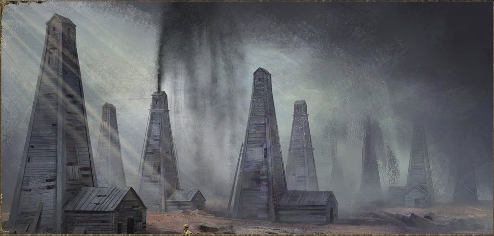
data/loading_screen/Loading_screen_34.tga Identical file locations data/loading_screen/load_althis/Loading_screen_34.tga Screen 35 — Review AI — user flagged · Authorship unverified
Harvest: foreground tool shafts and gripping hands need validation against the depicted agricultural action.
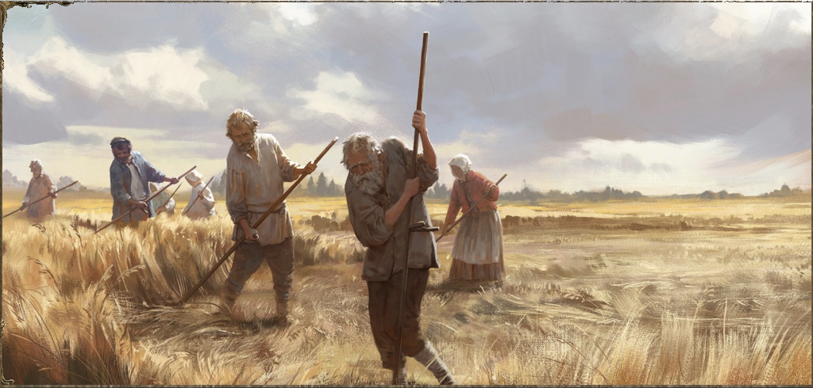
data/loading_screen/Loading_screen_35.tga Identical file locations data/loading_screen/load_althis/Loading_screen_35.tga Screen 36 — Review AI — user flagged · Authorship unverified
Armoured train: turret, chassis and wheel relationships require a real vehicle reference; design currently reads as generic fantasy machinery.
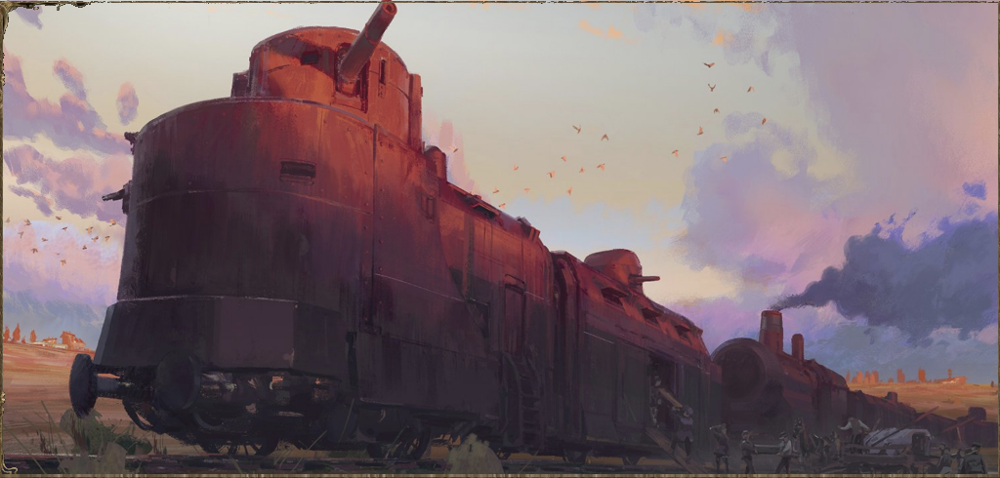
data/loading_screen/Loading_screen_36.tga Identical file locations data/loading_screen/load_althis/Loading_screen_36.tga Screen 37 — Replace AI — user flagged · Authorship unverified
Street violence: victim's raised arms, captors' grips and adjacent weapon shafts overlap into an ambiguous central tangle; the principal action needs rebuilding.
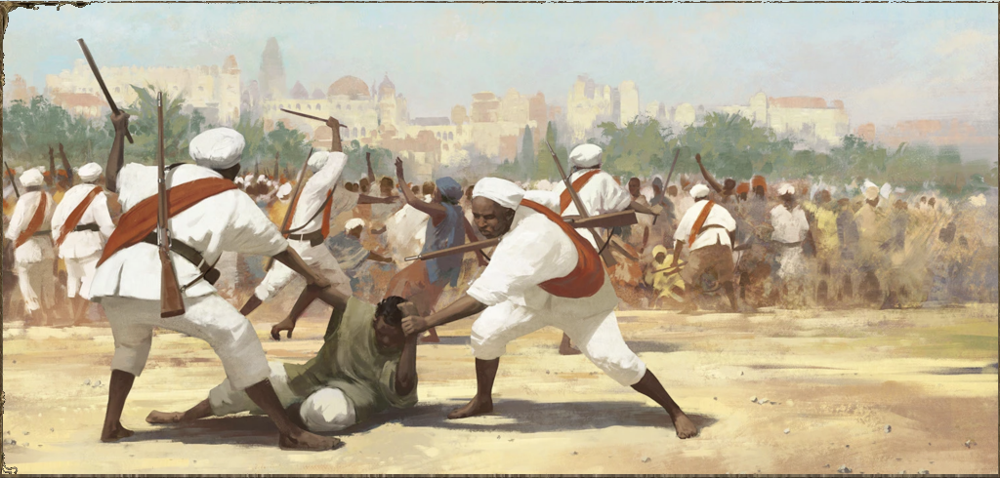
data/loading_screen/Loading_screen_37.tga Identical file locations data/loading_screen/load_althis/Loading_screen_37.tga Screen 38 — Review AI — user flagged · Authorship unverified
Locomotive: running gear, track contact and carriage alignment need a documented locomotive reference.
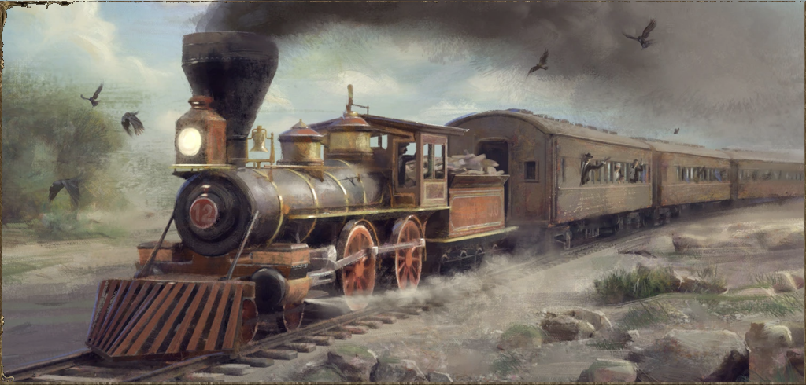
data/loading_screen/Loading_screen_38.tga Identical file locations data/loading_screen/load_althis/Loading_screen_38.tga Screen 39 — Retain provisionally AI — user flagged · Authorship unverified
Infantry rear view: clear grouping; exact helmet, uniform and firearm details are not historically authenticated.
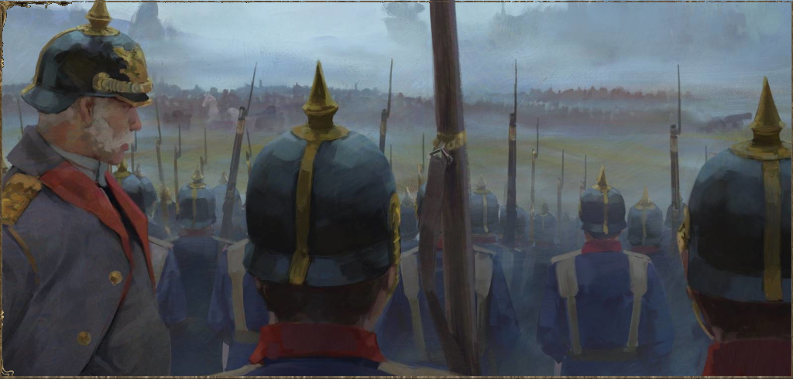
data/loading_screen/Loading_screen_39.tga Identical file locations data/loading_screen/load_althis/Loading_screen_39.tga Screen 40 — Review AI — user flagged · Authorship unverified
Machinery hall: large wheels and supports look plausible at a glance, but drive connections and shaft relationships are unresolved.
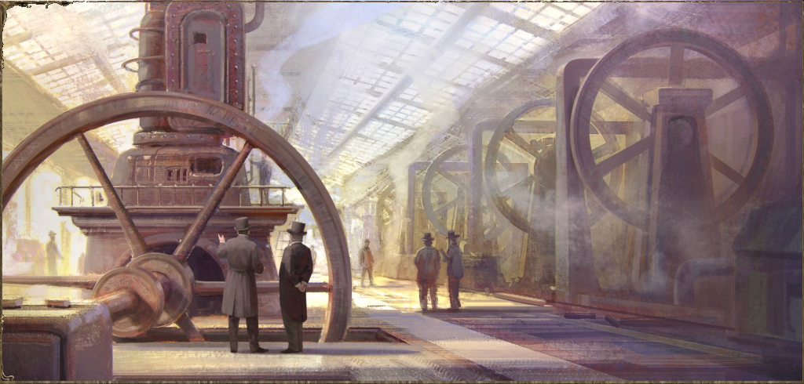
data/loading_screen/Loading_screen_40.tga Identical file locations data/loading_screen/load_althis/Loading_screen_40.tga Screen 41 — Review AI — user flagged · Authorship unverified
Military ceremony: horse legs, mounted seating and central presented object need closer reference checking.
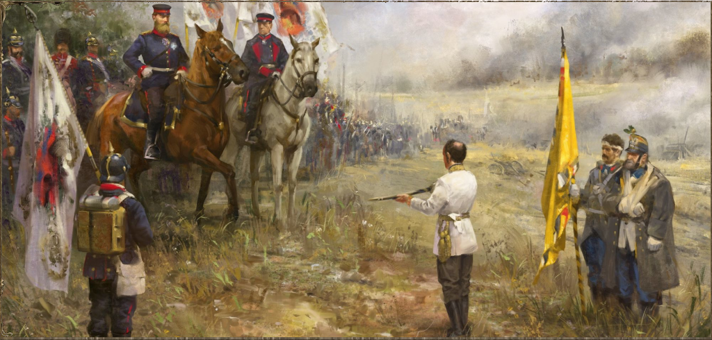
data/loading_screen/Loading_screen_41.tga Identical file locations data/loading_screen/load_althis/Loading_screen_41.tga Screen 42 — Review AI — user flagged · Authorship unverified
Exhibition interior: excessive blur in almost every human figure; weak focal subject and detail readability.
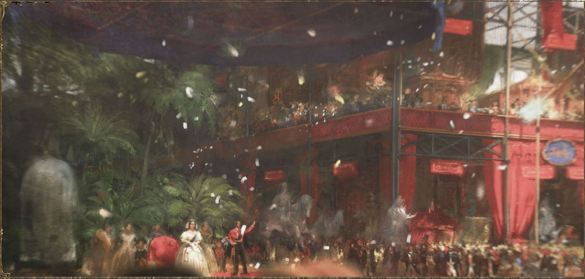
data/loading_screen/Loading_screen_42.tga Identical file locations data/loading_screen/load_althis/Loading_screen_42.tga Screen 43 — Retain provisionally AI — user flagged · Authorship unverified
Caravan gateway: clear main composition; camel load and small background figures are soft.
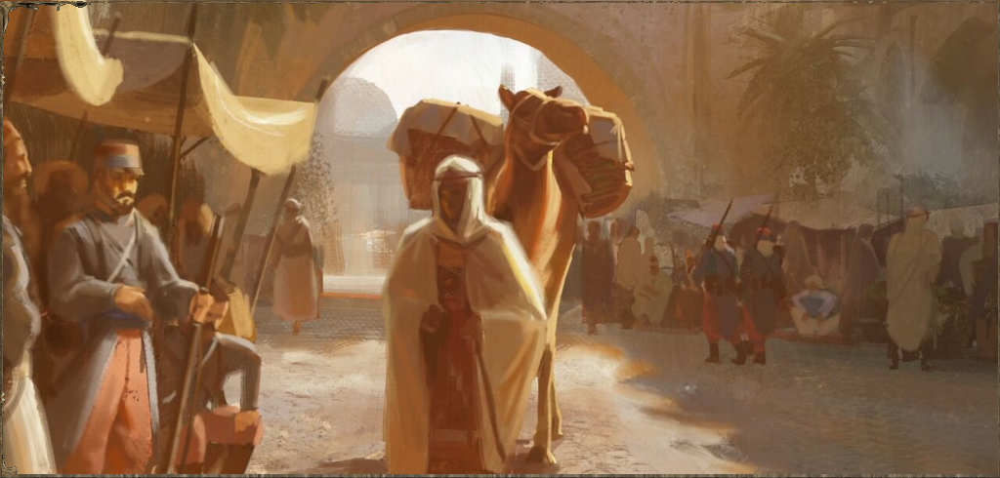
data/loading_screen/Loading_screen_43.tga Identical file locations data/loading_screen/load_althis/Loading_screen_43.tga Screen 44 — Retain provisionally AI — user flagged · Authorship unverified
Two seated dignitaries: readable poses and tea setting; gesturing fingers and costume identity need source verification.
data/loading_screen/Loading_screen_44.tga Identical file locations data/loading_screen/load_althis/Loading_screen_44.tga Screen 45 — Review AI — user flagged · Authorship unverified
Meeting: prominent pointing hands and surrounding faces are uneven; paper and grip lack convincing detail.
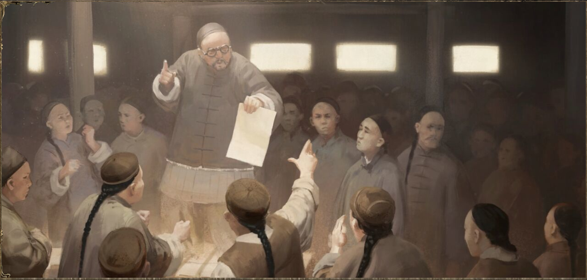
data/loading_screen/Loading_screen_45.tga Identical file locations data/loading_screen/load_althis/Loading_screen_45.tga Screen 46 — Retain provisionally AI — user flagged · Authorship unverified
Troops in gorge: atmospheric and readable; distant ranks are simplified.
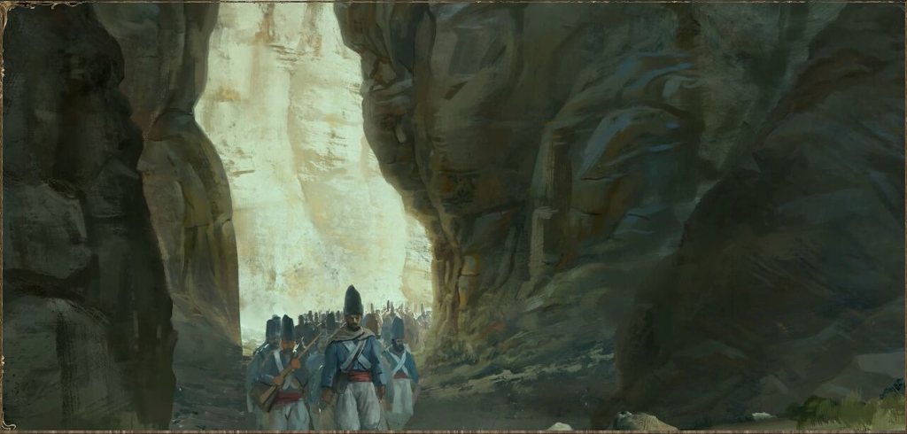
data/loading_screen/Loading_screen_46.tga Identical file locations data/loading_screen/load_althis/Loading_screen_46.tga Screen 47 — Retain provisionally AI — user flagged · Authorship unverified
Central Asian market: clear architecture-led composition; architectural identity and lettering need source checking.
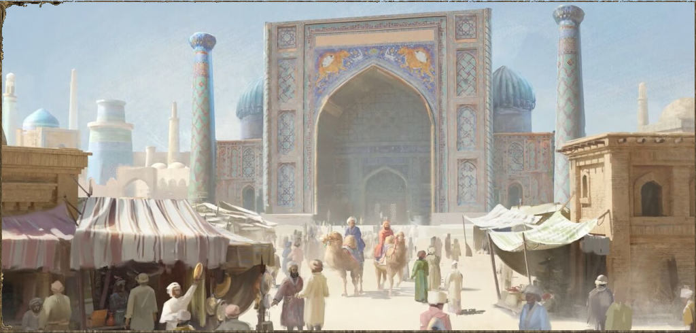
data/loading_screen/Loading_screen_47.tga Identical file locations data/loading_screen/load_althis/Loading_screen_47.tga Screen 48 — Review AI — user flagged · Authorship unverified
Cavalry: middle riders and horse bodies overlap ambiguously; validate leg count, saddle seating and reins individually.
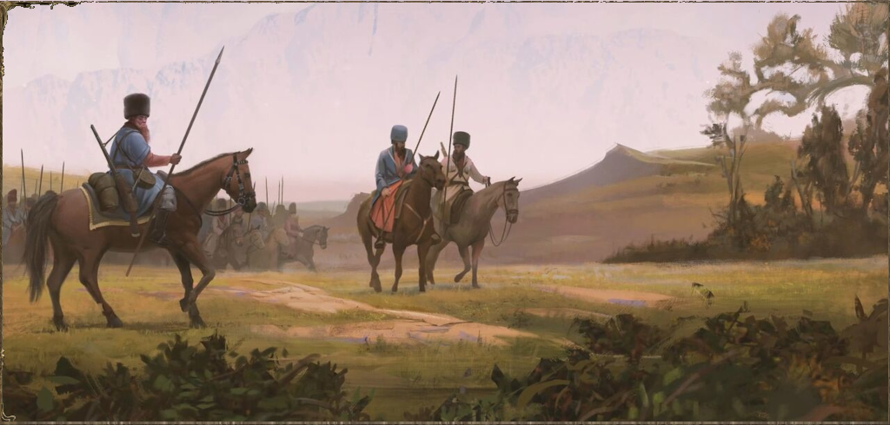
data/loading_screen/Loading_screen_48.tga Identical file locations data/loading_screen/load_althis/Loading_screen_48.tga Screen 49 — Retain provisionally AI — user flagged · Authorship unverified
Street procession: main poses read adequately; raised implement and exact event remain unverified.
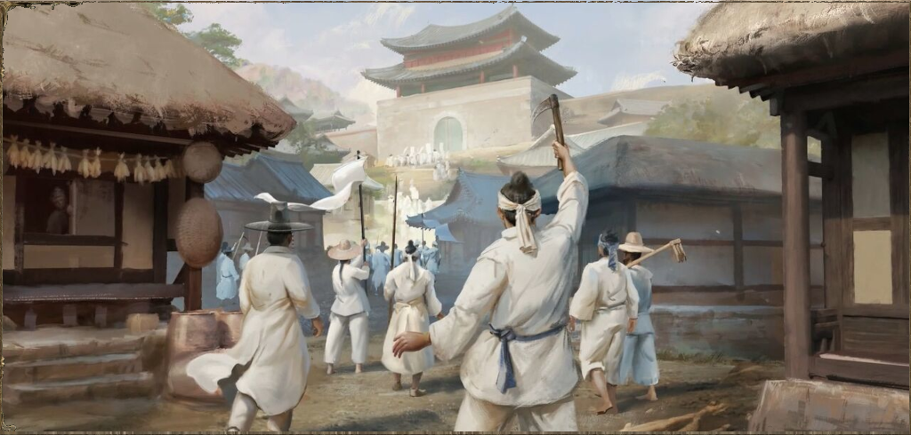
data/loading_screen/Loading_screen_49.tga Identical file locations data/loading_screen/load_althis/Loading_screen_49.tga Screen 50 — Review AI — user flagged · Authorship unverified
Court audience: right guards' sword grips, hands and repeated uniform forms need refinement.
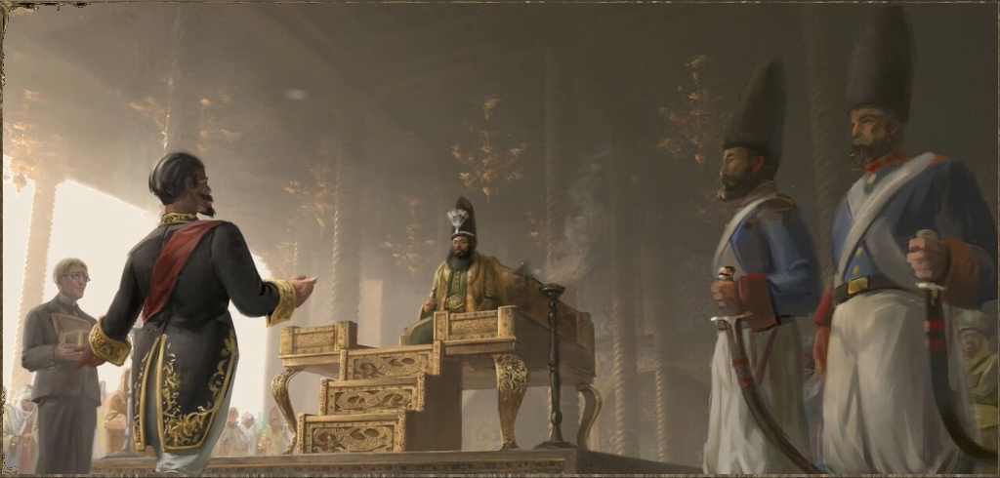
data/loading_screen/Loading_screen_50.tga Identical file locations data/loading_screen/load_althis/Loading_screen_50.tga Screen 51 — Review AI — user flagged · Authorship unverified
Printing works: large machine lacks clearly readable paper path and working connections; work gestures are generic.
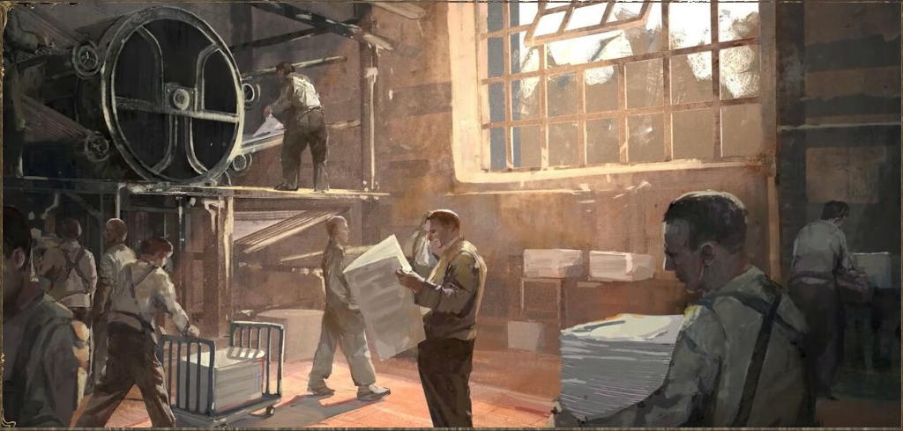
data/loading_screen/Loading_screen_51.tga Identical file locations data/loading_screen/load_althis/Loading_screen_51.tga Screen 52 — Replace AI — user flagged · Authorship unverified
Firing line: foreground rifles break into wedge-like stocks and blade-like extensions; hands fail to form convincing grips and overlapping weapons cannot be traced consistently.
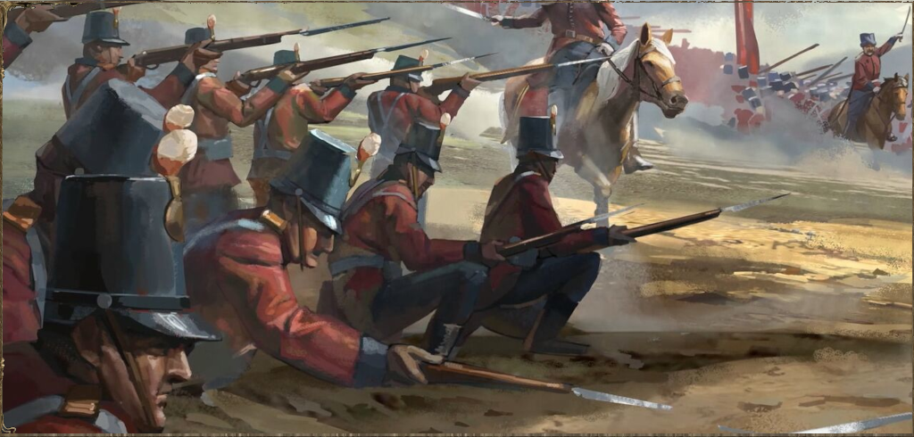
data/loading_screen/Loading_screen_52.tga Identical file locations data/loading_screen/load_althis/Loading_screen_52.tga Screen 53 — Review AI — user flagged · Authorship unverified
Prospectors: tool head, shaft and working target do not clearly communicate the action.
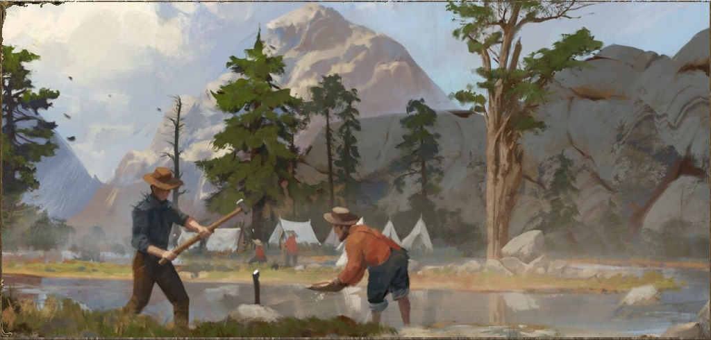
data/loading_screen/Loading_screen_53.tga Identical file locations data/loading_screen/load_althis/Loading_screen_53.tga Screen 54 — Retain provisionally AI — user flagged · Authorship unverified
City panorama: comparatively strong architecture-led screen; exact location remains unverified.
data/loading_screen/Loading_screen_54.tga Identical file locations data/loading_screen/load_althis/Loading_screen_54.tga Screen 55 — Review AI — user flagged · Authorship unverified
Resting soldiers: foreground dangling hands are elongated and poorly articulated; rifle holding is stiff, though bodies remain readable.
data/loading_screen/Loading_screen_55.tga Identical file locations data/loading_screen/load_althis/Loading_screen_55.tga Screen 56 — Retain provisionally AI — user flagged · Authorship unverified
Political gathering: main faces and silhouettes read; identities and costume accuracy require references.
data/loading_screen/Loading_screen_56.tga Identical file locations data/loading_screen/load_althis/Loading_screen_56.tga Screen 57 — Review AI — user flagged · Authorship unverified
Street confrontation: small pistol mechanism and grip are poorly resolved; foreground cane/hand junction is awkward.
data/loading_screen/Loading_screen_57.tga Identical file locations data/loading_screen/load_althis/Loading_screen_57.tga Screen 58 — Review AI — user flagged · Authorship unverified
Parade: repeated near-identical faces, rigid hands and formulaic marching poses undermine naturalism.
data/loading_screen/Loading_screen_58.tga Identical file locations data/loading_screen/load_althis/Loading_screen_58.tga Screen 59 — Review AI — user flagged · Authorship unverified
Barricade: raised weapon, standing figure's footing and lower-right combatants are unclear.
data/loading_screen/Loading_screen_59.tga Identical file locations data/loading_screen/load_althis/Loading_screen_59.tga Screen 60 — Retain provisionally AI — user flagged · Authorship unverified
Harbour sunset: coherent scenery and ship silhouette; no obvious primary anatomy issue.
data/loading_screen/Loading_screen_60.tga Identical file locations data/loading_screen/load_althis/Loading_screen_60.tga Screen 61 — Retain provisionally AI — user flagged · Authorship unverified
Throne room: readable spatial arrangement; small hands, insignia and identity remain unverified.
data/loading_screen/Loading_screen_61.tga Identical file locations data/loading_screen/load_althis/Loading_screen_61.tga Screen 62 — Review AI — user flagged · Authorship unverified
Forest gunmen: right figure's carried firearm is obscured and awkwardly integrated into the arm; raised fingers and visible revolver need close source checking.
data/loading_screen/Loading_screen_62.tga Identical file locations data/loading_screen/load_althis/Loading_screen_62.tga